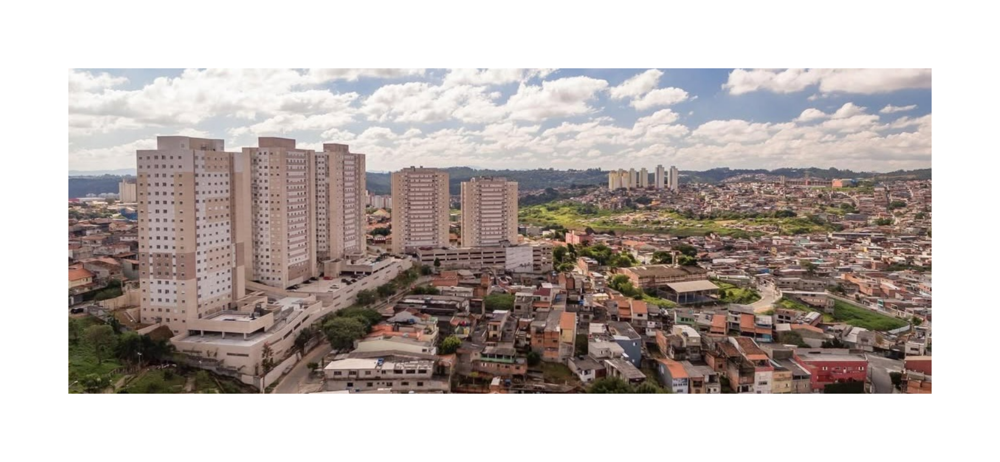

01
Descobrir
Encontre iniciativas e campanhas que acontecem em São Mateus.

São Mateus · Zona Leste
A força de um bairro começa com os moradores
Um caminho simples para conhecer e apoiar quem já atua no bairro.
01
Encontre iniciativas e campanhas que acontecem em São Mateus.
02
Veja o que cada iniciativa faz e quem ela atende.
03
Conheça os responsáveis, o tempo de atuação e os registros das ações.
04
Escolha como ajudar e fale direto com a iniciativa.
Conheça organizações que já fazem a diferença em São Mateus.

Iniciativa local de apoio social que atua em São Mateus.
Conhecer a iniciativa
Desenvolve programas socioassistenciais em São Mateus e adjacências.
Conhecer a iniciativa
Promove iniciativas culturais, educacionais, ecológicas e sociais na Vila Flávia.
Conhecer a iniciativa [PREENCHER][PREENCHER]
Conhecer a iniciativaConheça iniciativas que atuam em causas importantes para o bairro.

Conheça iniciativas que enfrentam as desigualdades em São Mateus e promovem inclusão, oportunidades e uma vida digna.
Saiba mais
Conheça iniciativas que atuam com assistência básica no bairro e oferecem apoio essencial às famílias de São Mateus.
Saiba maisEscolha uma iniciativa, veja do que ela precisa e entre em contato direto com quem já faz a diferença em São Mateus.